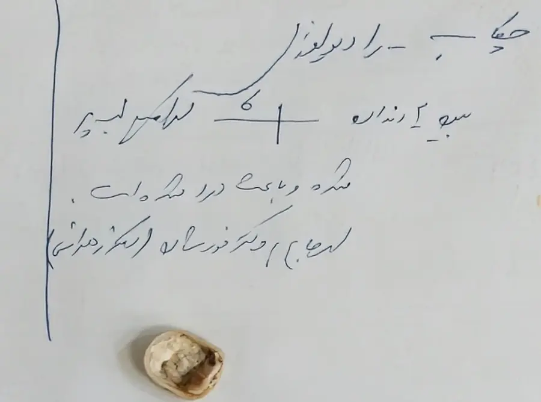
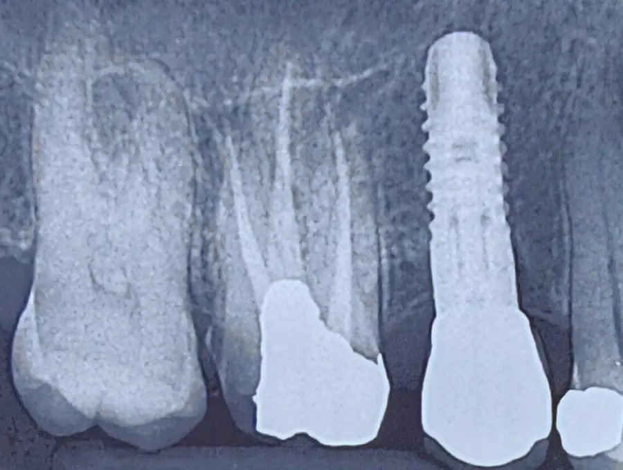

نسخه استخراجشده؛ ترجمه یا تأیید علمی انجام نشده است. وضعیت: captured
بیمار با روکش افتادهی دندان ۶ بالا در دست آمده است و فکر میکند این روکش را تو ساختهای. مسیر طولانی را آمده است. وقتی میپرسی چرا روکش شکسته را که قبلاً گفته بودی عوض نکرد، میگوید: «دکترم یک دندانهایی را تراشید و مشکل حل شد.»

اول پرونده: کار تو ایمپلنت دندان ۵ بوده و روکش ۶ را همکار دیگری در شهر خود بیمار ساخته است. در مراجعهی چند سال پیش، پریدگی روکش ۶ و درد ناحیهی پروگزیمال بهخاطر گیر غذایی را ثبت کرده و لزوم تعویض روکش را به بیمار گفته بودی.
بعد خود روکش. دو یافته روی آن دیده میشود:
حتی پیش از دیدن رادیوگرافی، این دو یافته با هم یک فرضیه میسازند: روکش در جلسهی تحویل از سمت پالاتال خوب ننشسته (نشست ناقص، Incomplete Seating)، در نتیجه بلند شده، و دندانپزشک قبلی برای برقراری اکلوژن سطح اکلوزال را بهشدت تراشیده است.
برای بیمار «مشکل حل شد» یعنی درد رفت. احتمالاً همکار قبلی با تراشیدن پلانجر کاسپ (Plunger Cusp)، یعنی کاسپی که غذا را به فضای بیندندانی میراند، درد را خواباند؛ ولی گیر غذایی سر جایش ماند و سرعت ایجاد پوسیدگی را بهشدت بالا برد. خاموش شدن علامت نشانهی درمان نیست؛ پوسیدگی پروگزیمال در همان سکوت پیش میرود.

رادیوگرافی و معاینهی بالینی فرضیه را کاملاً تأیید کرد: ننشستن روکش به پوسیدگیهای بسیار عمیق در پروگزیمالهای دندان ۶ انجامیده بود. ترتیب استدلال این بود: یافتهها، سپس تفسیر، سپس تأیید.
بهخاطر وسعت تخریب نسج، دندان غیرقابل نگهداری (Hopeless) است: بازسازی قابلدفاعی برایش نمانده و مسیر درمان مجدد بسته است. تصمیم در این نقطه کشیدن و جایگزینی با ایمپلنت است، نه تلاش دوبارهی ترمیمی.
نکتهی بالینی: در جلسهی تحویل، اگر روکش بهطور غیرمنطقی بلند بود، پیش از برداشتن توربین و تراش اکلوزال، نشست کامل مارجینها را چک کن؛ بهویژه در نواحی دور از دید مثل پالاتال و دیستال. تنظیم اکلوژن برای روکشی که ننشسته فقط پاک کردن صورتمسئله است: علامت را حذف میکند و علت را سر جایش نگه میدارد، و به قیمت پوسیدگیهای خاموش و از دست رفتن دندان پایه تمام میشود.